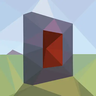
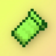

Overview#

Space Stone
infinity:space_stone - Color
- Blue (
#0255FF) - Container
 Tesseract
Tesseract- Found in
- Norse Village, Overworld
- Power
infinity:space_stone
You get the Space Stone's power by holding the stone or the Tesseract in either hand, wearing the stone in the  Curios head slot,
putting it in your gauntlet, or putting it in a Cosmi-Rod. To get it out of the Tesseract, drop the Tesseract and left-click it.
Right-clicking with the Tesseract jumps you to the next dimension, see the Tesseract.
Curios head slot,
putting it in your gauntlet, or putting it in a Cosmi-Rod. To get it out of the Tesseract, drop the Tesseract and left-click it.
Right-clicking with the Tesseract jumps you to the next dimension, see the Tesseract.
Abilities#
Click an ability in the tree to see what it does, what it costs and what it needs. Lines show what has to come first.
Jump Teleport
Opens a quick portal to the block you are looking at and jumps you through.
One portal opens in front of you and one at the block you're looking at, up to 256 blocks away. You land on
safe ground next to that block. Both close after 3 seconds and anything can use them until then. With 
- Needs
- Force Field
infinity: · infinity:
Teleport GUI
Type a dimension and coordinates and open a portal there.
Opens the Space Teleport menu. The dimension field suggests every dimension the server has, and you fill in X, Y and Z. Open Portal puts one portal 2.5 blocks in front of you and the other at the destination. They stay open until someone left-clicks the rim of one, which closes both. This is how you get to the mod's planets without a rocket. Still works while you're burnt from the Snap.
With Immersive Portals installed, an open portal shows the other side through it and you walk straight through, from either side. See Immersive Portals.
- Needs
- Force Field
- Leads to
- Black Hole
infinity: · infinity:portal
Telekinesis
Pick up a mob or a block, move it around and throw it.
Turn it on while looking at an entity or solid block (up to 32 blocks away) and it floats in front of you. Scroll to move it between 2 and 24 blocks away and left-click to throw it. Thrown things act like a projectile, they hurt whatever they hit. Turn it off to put it down, and blocks realign to the grid and are placed back down. Unbreakable blocks and blocks with block entities (chests, furnaces and so on) can't be picked up.
- Needs
- Force Field
- Leads to
- Spatial Lock
infinity: · infinity:
Spatial Lock
Right-click while holding something with Telekinesis to freeze it in place.
Locked things can't move, fall or be knocked back. A held block stays floating. Pick it up with Telekinesis again to free it. Locks are saved with the world.
- Needs
- Telekinesis
infinity: · infinity:
Black Hole
Summon a black hole that follows your aim, then throw it.
Needs the Power Stone as well. The black hole grows in front of you, follows where you look and pulls in mobs and blocks. Left-click throws it and it collapses by itself a bit later. Turning it off before you throw it collapses it straight away.
- Needs
- Teleport GUI
- Stones
 Power Stone
Power Stone
infinity: · infinity:
Water Breathing
Breathe underwater.
- Needs
- Nothing, it's a starting entry
- Leads to
- Water Breathing Toggle
infinity: · palladium:
Force Field
A shield bubble that blocks attacks but stops you moving.
While it's up you get a huge armor and toughness boost, a shield is drawn around you, and you can't walk, strafe or jump. Hits from anything dealing less than 23 damage are blocked. Iron Golems, Wardens, Vindicators, Piglin Brutes and Zombified Piglins are always blocked. Damage with no attacker (falling, fire, suffocation) still hurts.
- Needs
- Nothing, it's a starting entry
- Leads to
- Jump Teleport, Teleport GUI, Telekinesis
infinity: · palladium:
Fall Damage Immunity
No fall damage.
- Needs
- Nothing, it's a starting entry
- Leads to
- Fall Damage Immunity Toggle
infinity: · palladium:
Step Assist
Walk up full blocks without jumping.
- Needs
- Speed
- Leads to
- Step Assist Toggle
infinity: · palladium:
Speed
Adds 0.05 to your movement speed, about 50% faster on foot.
- Needs
- Nothing, it's a starting entry
- Leads to
- Step Assist, Speed Toggle
infinity: · palladium:
Speed Toggle
Free. Click it in the skill tree to turn Speed off or back on.
- Needs
- Speed
infinity: · infinity:toggle
Step Assist Toggle
Free. Click it in the skill tree to turn Step Assist off or back on.
- Needs
- Step Assist
infinity: · infinity:toggle
Fall Damage Immunity Toggle
Free. Click it in the skill tree to turn Fall Damage Immunity off or back on.
- Needs
- Fall Damage Immunity
infinity: · infinity:toggle
Water Breathing Toggle
Free. Click it in the skill tree to turn Water Breathing off or back on.
- Needs
- Water Breathing
infinity: · infinity:toggle
Skill tree costs#
Force Field leads to all the active abilities. Speed leads to Step Assist. Prices are in  Aspects of Existence, from 1 for Step Assist to 32 for Black Hole. Each passive
gets a free toggle once you own it, so you can switch it off without losing it.
Aspects of Existence, from 1 for Step Assist to 32 for Black Hole. Each passive
gets a free toggle once you own it, so you can switch it off without losing it.
Full cost table
| Ability | Cost | Unlock after | Use |
|---|---|---|---|
| Force Field | 4 | Nothing | Toggle |
| Jump Teleport | 6 | Force Field | Key press |
| Teleport GUI | 10 | Force Field | Key press |
| Telekinesis | 8 | Force Field | Toggle |
| Spatial Lock | 6 | Telekinesis | Upgrade |
| Black Hole | 32 | Teleport GUI | Toggle |
| Water Breathing | 2 | Nothing | Passive |
| Fall Damage Immunity | 3 | Nothing | Passive |
| Speed | 2 | Nothing | Passive |
| Step Assist | 1 | Speed | Passive |
| Speed Toggle | Free | Speed | Skill tree switch |
| Step Assist Toggle | Free | Step Assist | Skill tree switch |
| Fall Damage Immunity Toggle | Free | Fall Damage Immunity | Skill tree switch |
| Water Breathing Toggle | Free | Water Breathing | Skill tree switch |
| Everything | 74 | ||
How portals work#
- Portals come in pairs. One end opens 2.5 blocks in front of you and the other at the destination. Each end takes about 3 seconds to open fully.
- Anything that walks into one end, players and mobs, comes out the other on safe ground. There's a one second cooldown per entity so you don't bounce straight back.
- Teleport GUI portals stay open until someone left-clicks the rim of one end. Then both close. The chunks at both ends stay loaded while they're open.
- Jump Teleport portals close by themselves after 3 seconds. If there's no block in range you get "No block found within range for the portal."
- Addons can change the menu background, the portal color and size, and switch to a fire style (an orange ring of flames, like a sling ring portal). See Ability Reference.
With Immersive Portals#
Install Immersive Portals (it needs 
- You see the destination through the portal, even in another dimension, and walk straight through without a loading screen.
- They work both ways and from both sides. Walk into the front of either end and you come out of the front of the other, or into its back and you come out of the other's back.
- Left-clicking the rim of either end, from either side, closes the pair.
- The far end is nudged so the block grid lines up through the portal.
- Jump Teleport portals become real portals too. You walk through the near one yourself, and they stay open for 7 seconds instead of 3.
Without Immersive Portals, everything works the old way: walk into an end and you're moved to the other.
Telekinesis controls#
- Ability key
- Turns it off and puts the thing down. Blocks realign to the grid and are placed back down if they can.
- Mouse wheel
- Moves it closer or further away (2 to 24 blocks).
- Left-click
- Throws it. Faster and bigger things hit harder.
- Right-click
- Locks it in place, once you have Spatial Lock.
A block you're holding turns into a floating block entity. If it can't go back into the world it drops as an item after 30 seconds. Picking up something that's spatially locked unlocks it.
Tips#
- Black Hole and Meteor Storm both need the Power Stone too. Put both in a gauntlet and you get all of them.
- The Teleport GUI and Jump Teleport still work after the Snap, when the rest of the stone abilities are locked.